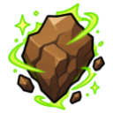
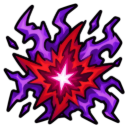
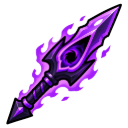
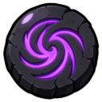

Magic
Sorcery spells cost runes each cast. Runecrafting makes runes from rune essence.
Combat spells
| Spell | Level | Max hit | XP | Runes |
|---|---|---|---|---|
| Wind Strike | 1 | 2 | 5.5 | |
 Earth Strike | 9 | 4 | 9.5 | |
| Fire Bolt | 20 | 6 | 13.5 | |
 Chaos Blast | 40 | 9 | 22 | |
| Death Wave | 62 | 13 | 34 | |
 Void Lance | 82 | 17 | 46 |  Void Rune |
Teleports
| Teleport to | Level | XP | Runes |
|---|---|---|---|
| 🌾 Ashvale | 5 | 20 | |
| 🌲 Thornwood | 25 | 35 | |
| 🕳️ Deepstone Mines | 40 | 48 | |
| 🏚️ Bleakhaven Ruins | 58 | 61 | |
| 🌀 The Voidscar | 80 | 75 | Void Rune |
High Alchemy
Turns an item into 1.5 × its value in coins.
| Property | Value |
|---|---|
| Level | Sorcery 45 |
| XP | 65 |
| Time | 2.4s |
| Runes |